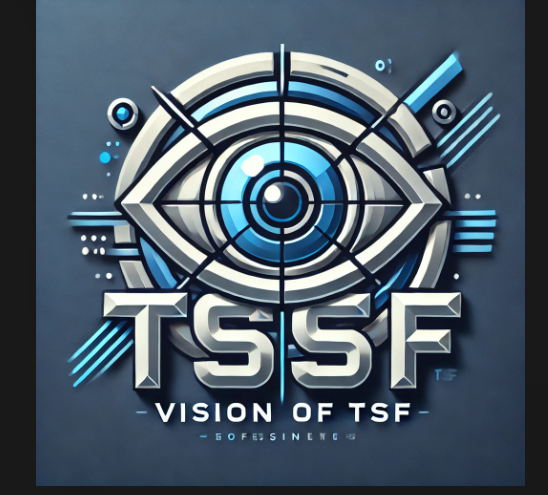

EMPOWERING THE TORMIK STUDENT COMMUNITY"
"Dedicated to enhancing the lives of students through innovation, leadership, and collaboration
SHAPING LEADERS, TRANSFORMING FUTURES
Connecting students with opportunities to grow, lead, and succeed together..
TSF: TOGETHER WE THRIVE
Building a brighter future for every Tormik student through unity, leadership, and growth
Unity
Education
Leadership
Cultural Preservation
TSF: A LEGACY OF STUDENT EMPOWERMENT
The Tormik Student Federation (TSF) was founded by Zahid Husain Mehdi in 2021 with the vision of empowering students and fostering a sense of community. The organization was established to support student welfare, provide resources, and create opportunities for leadership and growth. Since its inception, TSF has been committed to enhancing the academic and social lives of students, ensuring that every member has the tools and support needed to succeed.
About TSf Logo
The Tormik Student Federation (TSF) logo is a powerful emblem that encapsulates the organization’s core values and vision. At its center, the shield symbolizes protection, strength, and stability, representing TSF’s unwavering dedication to safeguarding the welfare, rights, and aspirations of students. It embodies the Federation's role as a guardian, ensuring that students are provided with a safe, secure, and supportive environment to thrive both academically and socially. The two figures holding graduation caps represent the collective journey of students as they pursue academic excellence, personal growth, and professional success. These figures reflect the spirit of determination and resilience, emphasizing the Federation's focus on empowering every individual to achieve their full potential. The caps, iconic symbols of education and achievement, highlight TSF’s emphasis on the importance of learning as the foundation for a brighter future. The handshake beneath the shield is a universal symbol of trust, partnership, and mutual respect. It signifies the collaborative and inclusive nature of TSF, bringing together students from diverse backgrounds. It reflects the idea that together, students are stronger and can overcome challenges to build a better tomorrow. The vibrant green and blue colors in the logo are symbolic as well. reflecting the Federation's dedication to continuous improvement and development. Blue, on the other hand, symbolizes trust, loyalty, and wisdom, which align with the values TSF upholds in its mission to guide and inspire students. This thoughtfully designed logo is more than just an image—it is a representation of TSF’s enduring promise to uplift, support, and unite students as they strive to reach new heights in their academic and personal lives
Top Galleries
Let's keep in touch
Connect us on .